Анализ конкурентов по поиску фильмов
Megogo
Начальная страница
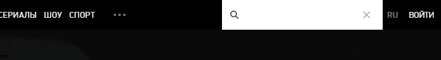
Простой, незамысловатый поиск,
который имеет вполне логичное расположение.
Быстрый поиск
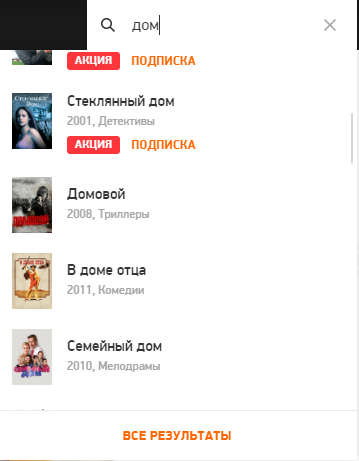
При вводе названия
появляется небольшой выпадающий список,
который не захламляет интерфейс. В нем содержится большое количество
фильмов, при этом, если не найден нужный фильм, в поле видимости
ссылка "Все результаты"
Страница с результатами
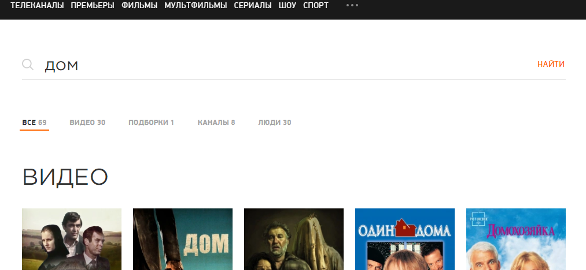
К сожалению, адекватные
фильтры и сортировки отсутствуют.
Они представлены только в виде "каналов", "людей" и тп.
Необходимо добавить адекватные фильтры.
Мобильная версия
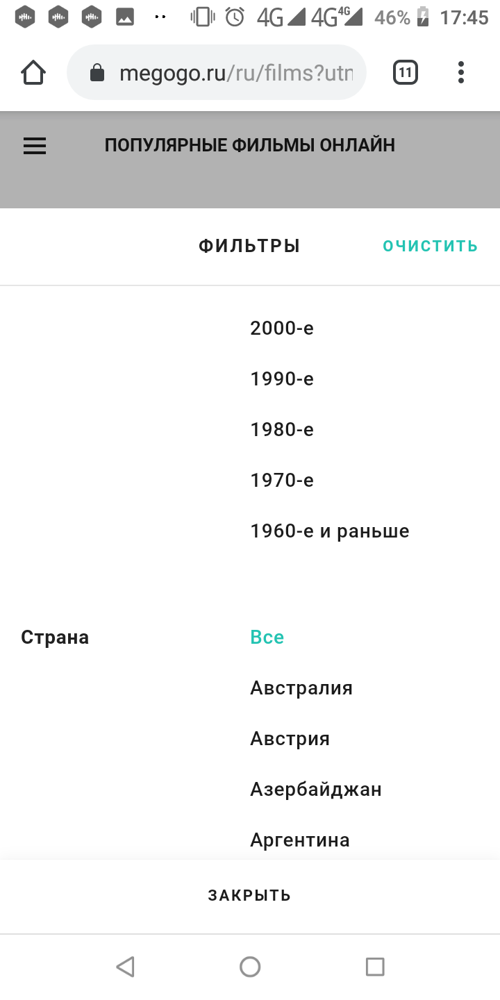
На первой странице намека на поиск нет. Также нет его и в боковой
менюшке. Если тапнуть на категорию, откроется список с фильмами, в
котором можно уже что-то выбрать из фильтров. Но само представление
фильтрации крайне ужасно. Юзеру предлагают продираться сквозь длинные
списки со странами-производителями и тому подобным. Речи о селектах,
полях ввода не идет.
Tubi
Начальная страница
Инпут для поиска виден, что уже хорошо. При вводе названия появляется
список, который мне
не удалось хоть как-то отфильтровать
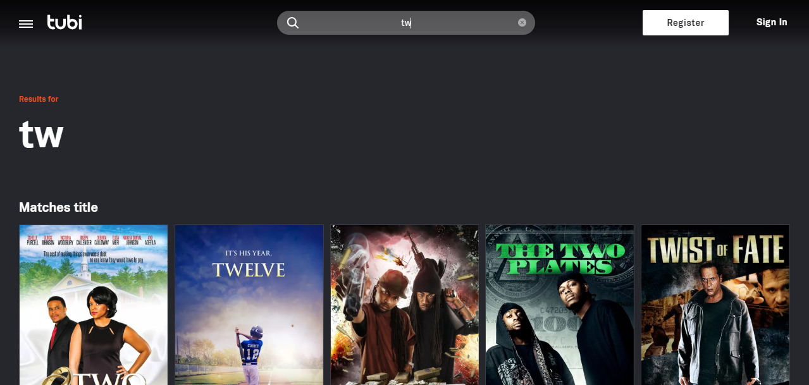
Расширенный поиск
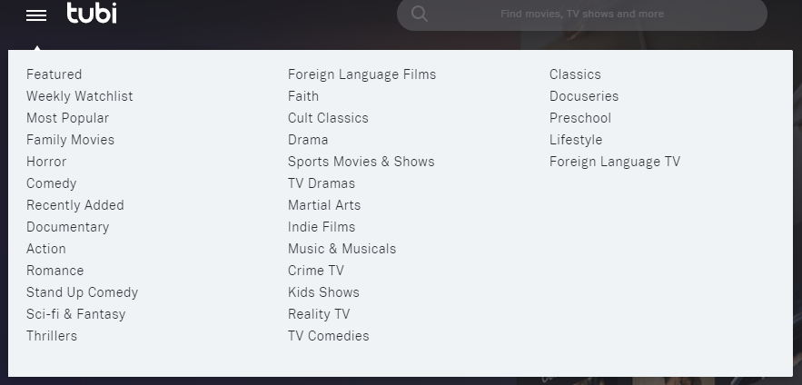
Он отсутствует. По крайней мере, мне не
удалось его найти. Все, что есть, это выпадающее меню, которое
занимает большую часть экрана. При этом
появляется при наведении курсора. По клику на
категорию появляется такая же страница с фильмами как выше.
Этому сервису явно не хватает наличие фильтров.
Мобильная версия
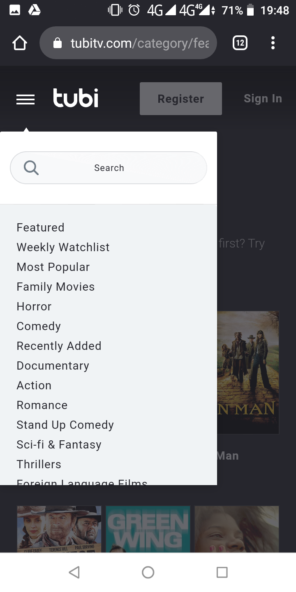

Поиск можно обнаружить в левом меню по тыку на гамбургер. Ввод
какого-либо названия или выбор категории ведет на похожие страницы,
где отсутствует фильтрация.
Kinopoisk
Начальная страница
Большой и манящий поиск, который после входа на сайт может заставить
юзера сразу же броситься что-то искать.
Огромный плюс - тут же располагается ссылка на расширенный
поиск, ее не нужно выискивать по всей странице.
Расширенный поиск

Не совсем понятно, почему именно такое расположение фильтров.
“Прокатчик” и “MPAA”, которые могут быть известны лишь узкому кругу
ценителей, находятся выше фильтра “жанр”. Также фильтры “премьера” и
“сборы” особой важности не играют.
Я бы их вынес куда-нибудь пониже.
Поиск по жанрам
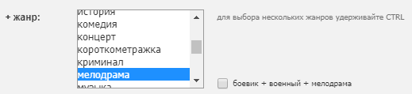
Присутствует поиск по нескольким жанрам,
что, конечно, удобно. Однако,
исполнение не совсем удачно. Крутить этот
длинный мультиселект туда-сюда для снятия выбора не совсем удобно.
Я бы сделал появляющиеся “бэйджики” справа с возможностью их
легкого удаления, как ниже
Поиск по ключевому слову
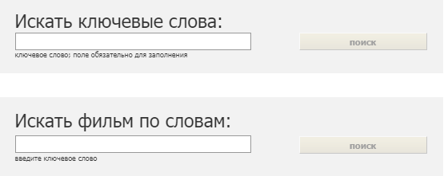 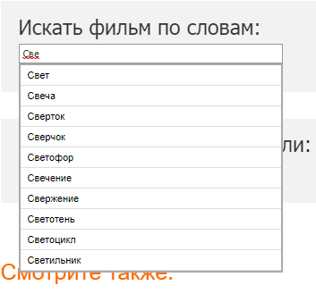
Радует наличие таких возможностей. Уверен, что это спасло немало
юзеров, при поиске фильмов. Например, при вводе ключевого слова,
появляется выпадающий список, элементы которого в свою очередь ведут
на список подходящих фильмов. В этот плане Кинопоиск полностью
оправдывает свое название.
Мобильная версия
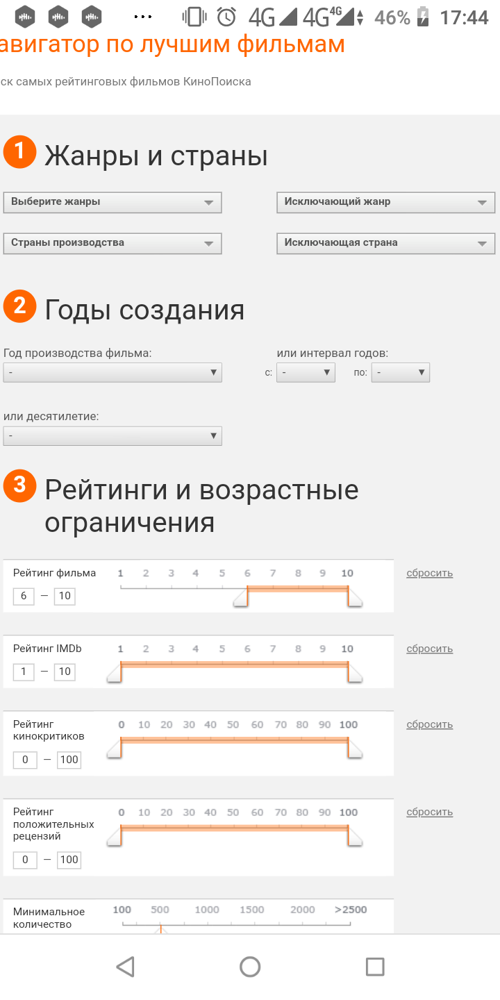
Кнопка поиска у мобильного Кинопоиска находится на видном
месте, как и у его старшего брата. При вводе названия юзеру предлагается
ограниченный список результатов, но
со ссылкой "Все результаты".
А вот до фильтрации нужно еще добраться. И сама страничка с фильтрами
выглядит крайне неприглядно, адаптации под мобильные устройства
нет
(на скриншоте увеличенная версия)
IVI.RU
Начальная страница
Поиск находится на видном месте. Искать его не приходится.
Быстрый поиск
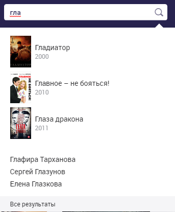
При вводе первых символов
появляются три совпадающих варианта с постерами, с ссылкой “Все
результаты”. Это не перегружает интерфейс, но ссылка “Все результаты” ведет на страничку всего лишь с восемью
найденными фильмами, что весьма
ограничивает юзера в поиске. После неудачного
простого поиска придется потупить и идти искать расширенный. Как
вариант, нужно
предоставить ссылку “Расширенный поиск” на видном месте
Главное меню
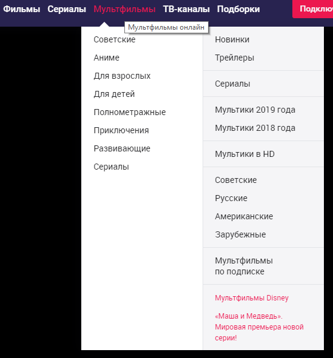
При наведении курсора на ссылки “Фильмы”, “Сериалы” и тд, появляется
всплывающая менюшка с жанрами. В этом есть огромный минус: так как
списки довольно-таки длинные,
при случайном “сдвиге” курсора с менюшки, она пропадает и
приходится снова вести курсор наверх.
Я бы изменил поведение: появление меню по клику, исчезновение также
по клику.
Результаты поиска
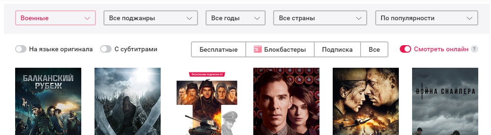
Когда юзер, наконец, доберется до расширенного поиска, кликнув по
ссылке в верхнем меню, ему предстанут
фильтры с той же болезнью: появление и исчезновение при
наведении.
Но здесь они выплывают прямо-таки на весь экран, что создает
неприятные впечатления, так как, по моему мнению, зачастую юзер
наводит туда курсор случайно. То есть, как будто бы это происходит без
его участия, что не может не раздражать. При этом
невозможно ввести название фильма, т.к. инпут
для этого отсутствует, что очень странно. Но есть и плюс, ivi.ru -
single page application, поэтому
отрисовка отфильтрованных результатов происходит без полной
перезагрузки страницы, и, конечно, без лишних кликов по кнопкам типа
“Показать” и тп.
Мобильная версия
Кнопка поиска находится снизу как у многих
приложений, например, Вконтакте. Юзеру не придется тянуть свой палец
куда-то вверх для тыка по ней, что, на мой взгляд, вполне удобно, но
немного не привычно.
Список фильмов без намека на фильтрацию.
Выбрать можно только по категориям.
Amazon Prime Video
Начальная страница
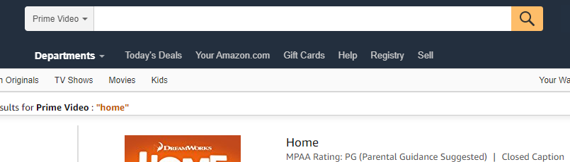
Здесь ничего необычного.
Поиск виден хорошо и издалека.
Быстрый поиск
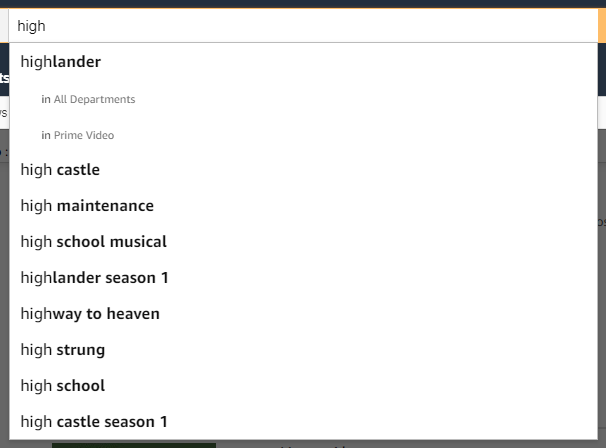
При вводе названия появляются результаты в ограниченном виде
без каких-либо ссылок на расширенный поиск.
Думаю, что
ссылка "Все результаты" или подобное необходимо.
Расширенный поиск
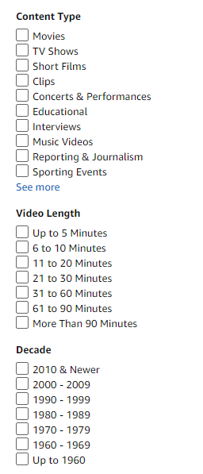
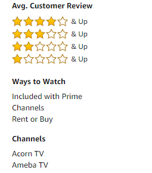
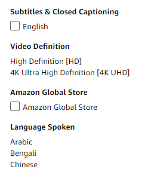
Amazon очень богат на различные фильтры.
Часть из них нужная, часть не очень. Из-за их расположения, они
нисколько не мешают.
Мобильная версия
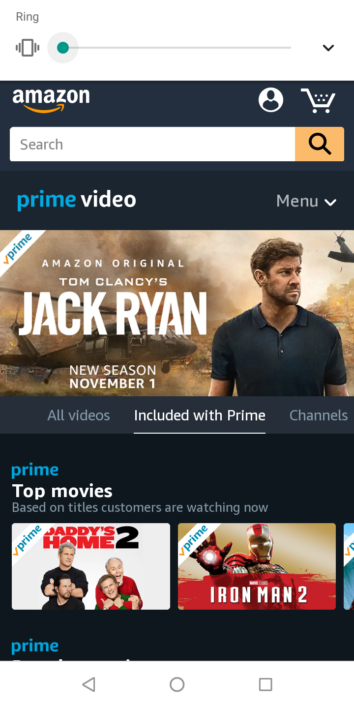
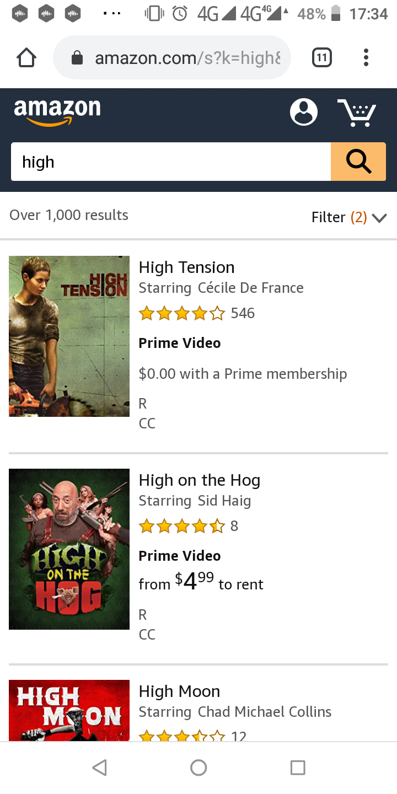
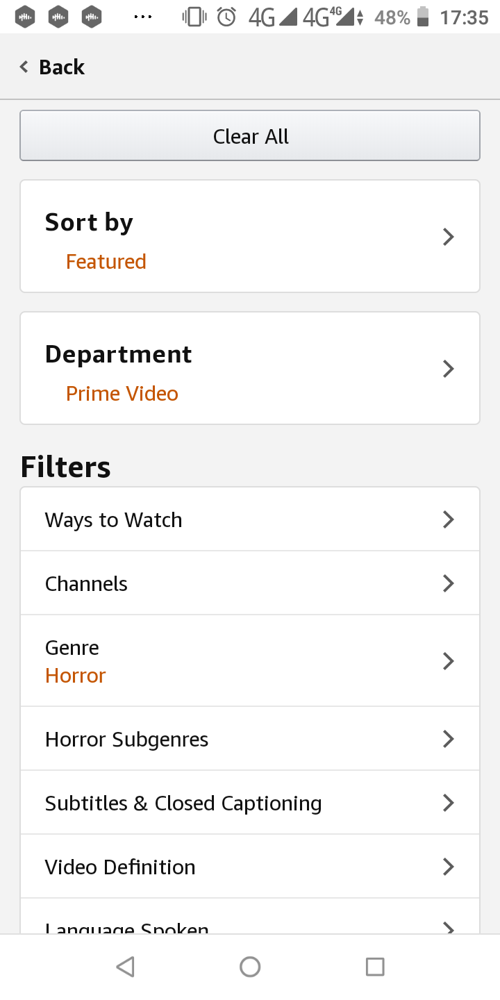
Поиск на видном месте, причем это не
кнопка, а полноценный инпут. При вбитии
названия, появляется список с результатами и
удобно расположенная кнопка для фильтрации.
Страница с фильтрами содержит немало параметров. Однако,
при выборе фильтра, произойдет редирект на страницу с
фильмами,
вместо ожидаемой страницы с фильтрами. Это крайне неудобно, при
желании выбрать несколько фильтров.
Итого
При анализе выбрал несколько сервисов для просмотра фильмов, как
популярных, так и не очень, чтобы моменты
"как нужно делать" и
"как делать лучше не стоит"
были еще очевидней. Пришлось зацепить Кинопоиск, потому что у него много
хороших практик. Исходя из проведенного анализа, складывается четкое
мнение о наиболее удобном поиске фильмов. На мой взгляд он должен
включать в себя следующее:
- Очевидное расположение кнопки для поиска, как у большинства сервисов
- Ссылка на Расширенный поиск, как у кинопоиска
- В быстром поиске обязательно должна быть ссылка на все результаты. Также в быстрый поиск нужно добавить небольшие постеры фильма, чтобы взгляду было легче зацепиться за знакомый образ.
- На странице с результатами - фильтры и поле для корректировки названия искомого фильма или кнопка для их отображения
- Возможность выбора по нескольким параметрам без хождений туда-сюда по страницам
- Также, по мере технических возможностей, возможно организовать поиск по ключевым словам
- Никаких самопроизвольных всплытий меню